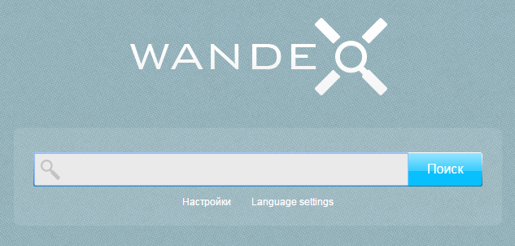
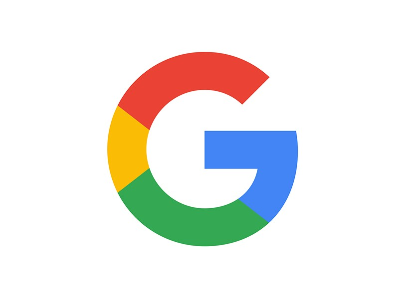

ИСТОРИЯ
На раннем этапе развития сети Интернет Тим Бернерс-Ли поддерживал список веб-серверов, размещённый на сайте . Сайтов становилось всё больше, и поддерживать вручную такой список становилось всё сложнее. На сайте NCSA был специальный раздел «Что нового!» (англ. What's New!), где публиковали ссылки на новые сайты.
Первой компьютерной программой для поиска в Интернете, была программа Арчи (англ. archive — архив без буквы «в»). Она была создана в 1990 году Аланом Эмтэджем (Alan Emtage), Биллом Хиланом (Bill Heelan) и Дж. Питером Дойчем (J. Peter Deutsch), студентам, изучающими информатику в университете Макгилла в Монреале. Программа скачивала списки всех файлов со всех доступных анонимных FTP-серверов и строила базу данных, в которой можно было выполнять поиск по именам файлов. Однако, программа Арчи не индексировала содержание этих файлов, так как объём данных был настолько мал, что всё можно было легко найти вручную.
Развитие и распространение сетевого протокола Gopher, придуманного в 1991 году Марком Маккэхилом (Mark McCahill) в университете Миннесоты, привело к созданию двух новых поисковых программ, Veronica и Jughead. Как и Арчи, они искали имена файлов и заголовки, сохраненные в индексных системах Gopher. Veronica (англ. Very Easy Rodent-Oriented Net-wide Index to Computerized Archives) позволяла выполнять поиск по ключевым словам большинства заголовков меню Gopher во всех списках Gopher. Программа Jughead (англ. Jonzy's Universal Gopher Hierarchy Excavation And Display) извлекала информацию о меню от определённых Gopher-серверов. Хотя название поисковика Арчи не имело отношения к циклу комиксов «Арчи», тем не менее Veronica и Jughead — персонажи этих комиксов.
К лету 1993 года ещё не было ни одной системы для поиска в вебе, хотя вручную поддерживались многочисленные специализированные каталоги. Оскар Нирштрасс (Oscar Nierstrasz) в Женевском университете написал ряд сценариев на Perl, которые периодически копировали эти страницы и переписывали их в стандартный формат. Это стало основой для W3Catalog, первой примитивной поисковой системы сети, запущенной 2 сентября 1993 года.
Вероятно, первым поисковым роботом, написанным на языке Perl, был «World Wide Web Wanderer» — бот Мэтью Грэя (Matthew Gray) из Массачусетского технологического института в июне 1993 года. Этот робот создавал поисковый индекс «Wandex». Цель робота Wanderer состояла в том, чтобы измерить размер всемирной паутины и найти все веб-страницы, содержащие слова из запроса. В 1993 году появилась и вторая поисковая система «Aliweb». Aliweb не использовала поискового робота, но вместо этого ожидала уведомлений от администраторов веб-сайтов о наличии на их сайтах индексного файла в определённом формате.
JumpStation, созданный в декабре 1993 года Джонатаном Флетчером, искал веб-страницы и строил их индексы с помощью поискового робота, и использовал веб-форму в качестве интерфейса для формулирования поисковых запросов. Это был первый инструмент поиска в Интернете, который сочетал три важнейших функции поисковой системы (проверка, индексация и собственно поиск). Из-за ограниченности ресурсов компьютеров того времени индексация и, следовательно, поиск были ограничены только названиями и заголовками веб-страниц, найденных поисковым роботом.
Первой полнотекстовой индексирующей ресурсы при помощи робота («craweler-based») поисковой системой, стала система «WebCrawler», запущенная в 1994 году. В отличие от своих предшественниц она позволяла пользователям искать по любым словам, расположенным на любой веб-странице — с тех пор это стало стандартом для большинства поисковых систем. Кроме того, это был первый поисковик, получивший широкое распространение. В 1994 году была запущена система «Lycos», разработанная в Университете Карнеги-Меллон и ставшая серьёзным коммерческим предприятием.
Вскоре появилось множество других конкурирующих поисковых машин, таких как: «Magellan», «Excite», «Infoseek», «Inktomi», «Northern Light» и «AltaVista». В некотором смысле они конкурировали с популярными интернет-каталогами, такими как «Yahoo!». Но поисковые возможности каталогов ограничивались поиском по самим каталогам, а не по текстам веб-страниц. Позже каталоги объединялись или снабжались поисковыми роботами с целью улучшения поиска.
В 1996 году компания Netscape хотела заключить эксклюзивную сделку с одной из поисковых систем, сделав её поисковой системой по умолчанию на веб-браузере Netscape. Это вызвало настолько большой интерес, что Netscape заключила контракт сразу с пятью крупнейшими поисковыми системами (Yahoo!, Magellan, Lycos, Infoseek и Excite). За 5 млн долларов США в год они предлагались по очереди на поисковой странице Netscape.
Поисковые системы участвовали в «Пузыре доткомов» конца 1990-х. Несколько компаний эффектно вышли на рынок, получив рекордную прибыль во время их первичного публичного предложения. Некоторые отказались от рынка общедоступных поисковых движков и стали работать только с корпоративным сектором, например, Northern Light.
Google взял на вооружение идею продажи ключевых слов в 1998 году, тогда это была маленькая компания, обеспечивающая работу поисковой системы по адресу goto.com. Этот шаг ознаменовал для поисковых систем переход от соревнований друг с другом к одному из самых выгодных коммерческих предприятий в Интернете. Поисковые системы стали продавать первые места в результатах поиска отдельным компаниям.
Поисковая система Google занимает видное положение с начала 2000-х. Компания добилась высокого положения благодаря хорошим результатам поиска с помощью алгоритма PageRank. Алгоритм был представлен общественности в статье «The Anatomy of Search Engine», написанной Сергеем Брином и Ларри Пейджем, основателями Google. Этот итеративный алгоритм ранжирует веб-страницы, основываясь на оценке количества гиперссылок на веб-страницу в предположении, что на «хорошие» и «важные» страницы ссылаются больше, чем на другие. Интерфейс Google выдержан в спартанском стиле, где нет ничего лишнего, в отличие от многих своих конкурентов, которые встраивали поисковую систему в веб-портал. Поисковая система Google стала настолько популярной, что появились подражающие ей системы, например, Mystery Seeker(тайный поисковик).

К 2000 году Yahoo! осуществлял поиск на основе системы Inktomi. Yahoo! в 2002 году купил Inktomi, а в 2003 году купил Overture, которому принадлежали AlltheWeb и AltaVista. Затем Yahoo! работал на основе поисковой системе Google вплоть до 2004 года, пока не запустил, наконец, свой собственный поисковик на основе всех купленных ранее технологий.
Фирма Microsoft впервые запустила поисковую систему Microsoft Network Search (MSN Search) осенью 1998 года, используя результаты поиска от Inktomi. Совсем скоро в начале 1999 года сайт начал отображать выдачу Looksmart, смешанную с результатами Inktomi. Недолго (в 1999 году) MSN search использовал результаты поиска от AltaVista. В 2004 году фирма Microsoft начала переход к собственной поисковой технологии с использованием собственного поискового робота — msnbot. После проведения ребрендинга компанией Microsoft 1 июня 2009 года была запущена поисковая система Bing. 29 июля 2009 Yahoo! и Microsoft подписали соглашение, согласно которому Yahoo! Search работал на основе технологии Microsoft Bing. На момент 2015 года союз Bing и Yahoo! дал первые настоящие плоды. Теперь Bing занимает 20,1 % рынка, а Yahoo! 12,7 %, что в общем занимает 32,60 % от общего рынка поисковых систем в США по данным из разных источников.